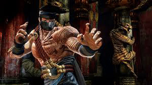
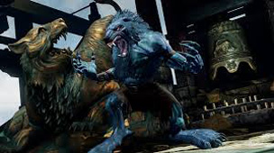

Killer Instinct
The Best Fighting Game of 2014
Killer Instinct is a fighting game in the Killer Instinct series, developed by Double Helix Games and Rare under supervision of Ken Lobb. The game was announced during Microsoft's E3 2013 press event, and was released exclusively as a launch game for the Xbox One on November 22, 2013.
Killer Instinct is a return to the series which retains its traditional combo-based gameplay. The main mechanic of combos is the Auto-Double (button presses following special attacks will create automatic combo hits instead of each individual hit requiring player input). A signature feature of Killer Instinct, the Ultra Combo, is included (an Ultra Combo is an automatic combo that can only be done to end a match and consists of a long string of attacks). Combo Breakers also return (attacks that, when timed properly, can stop a combo), with the new addition of Counter Breakers (the ability to reverse a Combo Breaker into a "Lockout" instead, the failure state of a Combo Breaker which prevents another breaker attempt for three seconds). A two-segmented super meter enables the use of Shadow moves that have upgraded hit properties and can cause more damage/combo hits. A notable new feature to the Killer Instinct gameplay is the addition of Instinct Mode. By filling up a secondary bar beneath the character's lifebar, each character can trigger a unique enhancement for a limited period (so for instance Glacius can cover himself in ice armor for better damage resistance or Thunder's dash becomes invincible and moves farther). The enhancements are built around complementing the character's playstyle traits. Instinct Mode can be used to perform an instantaneous cancel during a combo and also reset the knockdown value (a meter that appears during a combo that determines how close the engine is to automatically ending a combo). Instinct Mode can also be used to stop an Ultra Combo in order to chain it to other moves and even into another Ultra for an even more stylish finish than a simple Ultra Combo can provide.
The game features the ability to unlock and use classic Killer Instinct music and costumes in place of their updated counterparts. Chris Sutherland, the announcer from the first two Killer Instinct titles, also appears as an optional announcer available for use.[6] The game uses Kinect's facial recognition software to save players' personalized game settings.
Plot
The game is set several years after the events of Killer Instinct 2. Each character has their own story-arc in the game; a story mode featuring campaigns for each character will be released in March.
- Jago is suffering a crisis of faith following the discovery that the Tiger Spirit guiding him was actually Gargos.
- Sabrewulf has submitted to his feral side and torn out his cybernetic implants, restoring his arms through the use of dark arts.
- Glacius has resolved to recover and use his lost alien technology for the benefit of Earth.
- Thunder, having learned that his brother Eagle was killed in the first Killer Instinct tournament but not knowing how or why, resorts to making something of an alliance with a not-so-familiar face in order to obtain the information he seeks and finally receive closure.
- Sadira and her assassins are on a mission, hunting the other competitors for bloodsport.
- Orchid, for reasons unknown as of now, has been disavowed by her agency. Despite their apparent destruction at her hands, Orchid believes that UltraTech is still active, and fully commits herself to finding and eliminating what remains of them. To accomplish this, she has emigrated to a different part of the world to establish a rebel group. She also apparently suffers from paranoia to some extent.
- Spinal, once again resurrected and armed with a new living shield, seeks to remove the curse causing his immortality so that he might finally rest in peace.
Character Summaries
Jago
Jago is a mysterious warrior monk from a remote region of Tibet and the main protagonist of the Killer Instinct series. Guided by the powerful Tiger Spirit to seek his destiny, he has been lead to the Killer Instinct tournament to destroy the evil within.
Found abandoned as a baby at a Himalayan monastery and taken in by the Monks of the Tiger, Jago showed great promise from the start and, under the tutelage of the ancient Abbot, has swiftly become one of the Order's star pupils. During meditation he is visited by the very Tiger spirit his Order serves, which grants him great powers and Chooses him to battle the sinister evil of Ultratech. At first the power threatens to overwhelm Jago's sanity, but he soon masters it and becomes the finest warrior the Order has yet fathered. The ever-present uncertainty as to his origins, however, still troubles him.
Sabrewulf
Count von Sabrewulf, or just Sabrewulf, is a major character in the Killer Instinct series, appearing in every game in the series.
Sabrewulf is afflicted with the rare disease, Lycanthropy. Although he has spent most of his life as a recluse, he enters the Killer Instinct tournament on the promise of a cure if he is victorious.
Glacius
Glacius is an alien being and major character in the Killer Instinct franchise. So far, he has appeared in every single game (although the Glacius in KI2 was a different character from the Glacius in the original KI).
Glacius is an ice-like being from a planet far away from Earth. His reason for coming to Earth is also connected to Ultratech. It seems as if the company has also captured others of his species. His mission would become fruitless however, because due to a malfunction in his ship's systems, he crash-landed on Earth. Unfortunately for him, he was also recovered by none other than Ultratech. The tyranical company held him captive until their next Killer Instinct tournament and informed him they would let him go...if he fought for his life in the tournament. They wanted to prove that it was the human race that was the superior one.